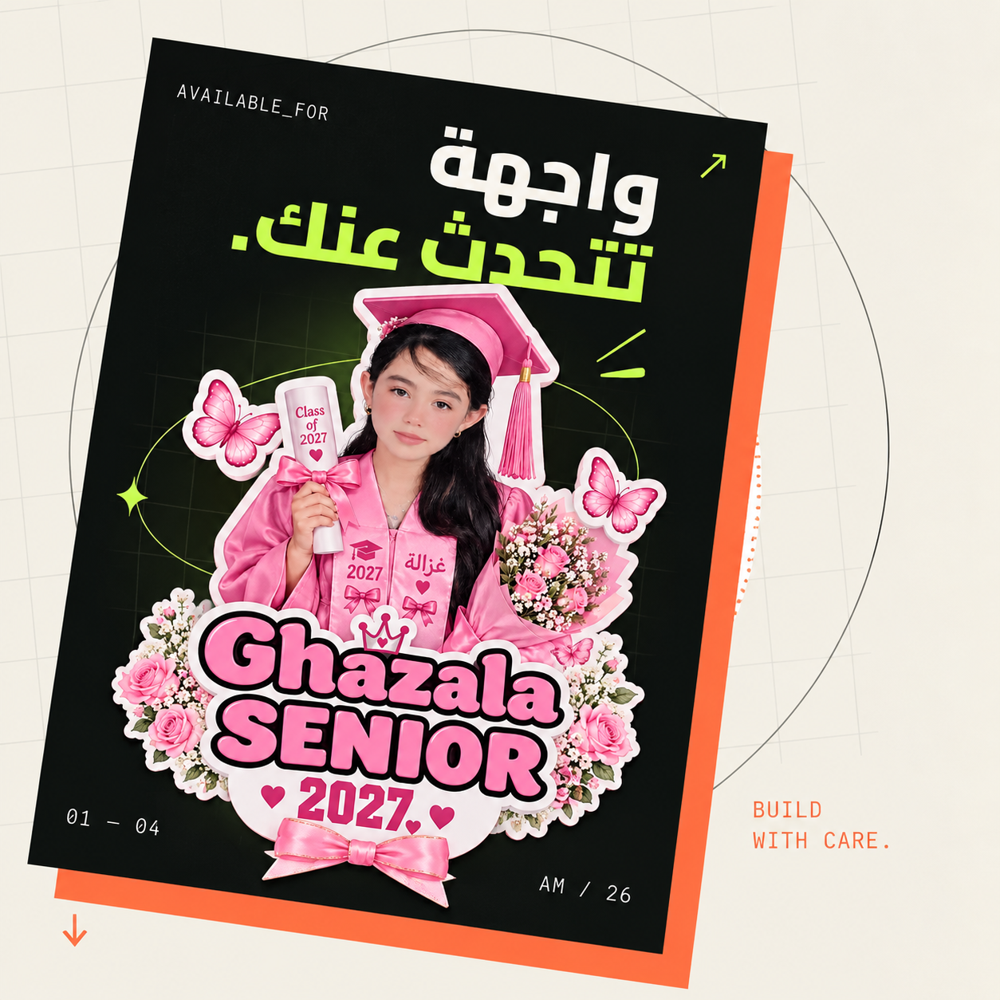

LUMINA
مطور واجهات أمامية · المنصورة، مصر
أحوّل الأفكار
إلى تجارب
تُستخدم وتُحب.
أبني واجهات رقمية مرتبة، سريعة، وقريبة من الناس — مع اهتمام حقيقي بالتفاصيل الصغيرة التي تصنع الفرق.

DESIGN
× CODE
× CODE
BUILD
WITH CARE.
WITH CARE.
SCROLL
01 / نبذة
أصمم بعقلية
أصمم بعقلية
المستخدم أولًا.
أنا منةالله مصطفي السيد طالبة ومطورة واجهات أمامية أستمتع بتحويل المشاكل المعقدة إلى تجارب بسيطة ومفهومة.
بدأت رحلتي مع سطر HTML صغير، وتطورت إلى شغف ببناء منتجات رقمية لها معنى. أعمل على تطوير مهاراتي كل يوم من خلال المشاريع العملية، القراءة، وتجربة أفكار جديدة.
هل لديك فكرة؟01
التخصصFront-end Development
02
أدرسعلوم الحاسب / نظم المعلومات
03
الهدف الحاليبناء منتجات مفيدة مع فريق رائع
04
خارج الشاشةقهوة، كتب، وموسيقى هادئة
02 / الأدوات
أدواتي لصناعة
أدواتي لصناعة
أشياء أفضل.
أؤمن أن الأداة الجيدة لا تكفي وحدها؛ المهم هو اختيارها في المكان الصحيح، واستخدامها لصناعة تجربة واضحة وسهلة.
CURRENTLY LEARNING ↗
React.js قريبًا
01HTML / CSSمتقدم
02JavaScriptجيد جدًا
03Bootstrapجيد جدًا
04Git / GitHubجيد
05UI Designجيد
HTML5CSS3JAVASCRIPTBOOTSTRAPGITFIGMA
03 / المسار
كل خطوة
كل خطوة
تعلّمني شيئًا.
2026 — الآن
مطور واجهات مستقل
تنفيذ واجهات ومواقع تجريبية لأفكار مختلفة، مع التركيز على التصميم المتجاوب وتجربة المستخدم.
عمل حر / مشاريع شخصية2025 — 2026
تدريب وتعلّم مكثف
بناء أساس قوي في HTML وCSS وJavaScript، وتطبيق المفاهيم من خلال تحديات ومشاريع قصيرة.
تعلم ذاتي2024 — 2025
بداية الرحلة البرمجية
التعرف على عالم البرمجة، التفكير المنطقي، والعمل على أولى الصفحات والمشاريع البسيطة.
البداية
04 / مختارات
أعمال صغيرة،
أعمال صغيرة،
أفكار كبيرة.
05 / تواصلفكرة تستحق
فكرة تستحق
أن ترى النور.
إذا كان لديك مشروع، فرصة تدريب، أو حتى سؤال — يسعدني أن أسمع منك.
mennaelemam2007@gmail.com.com